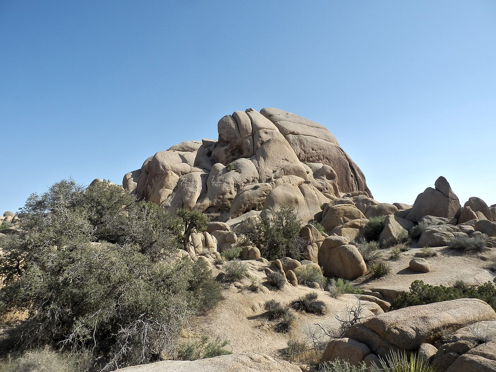

Joshua Tree from Twentynine Palms · 5-day family itinerary
Five days based in Twentynine Palms, flying in and out of Palm Springs, for an eight-year-old and a five-year-old. Each morning goes into the park with the day’s water already in the car, the walks stay short, and every day ends before the early December dark.

Photo: Alexander Migl, Joshua Tree Nationalpark Skull Rock Trail, CC BY-SA 4.0, via Wikimedia Commons.

Checked before you commit
This illustrative route flies into Palm Springs International Airport, stays five days in Twentynine Palms and flies home from the same airport. National Park Service pages for Joshua Tree National Park (basic information, first-time visitors, the busy season, fees, hiking, visitor centres, goods and services, safety guidelines, summer visits, stargazing, directions, operating hours, the FAQ and current alerts) were read on 11 November 2026. Nothing was booked.
One base and one airport. The National Park Service (NPS) puts the North Entrance in Twentynine Palms, three miles south of Highway 62, and says it is one of the two fastest entrances; the West Entrance is the busiest. NPS gives about 45 minutes between the West and North entrances and about an hour from the North to the South Entrance at Cottonwood. NPS gives no airport drive time; two route planners put it at about an hour to an hour and a quarter.
One anchor each morning and a quiet afternoon in town. Every walk is from the NPS list of short walks and nature trails: the longest planned is Arch Rock, 1.4 miles (2.1 km), about an hour. The only long driving day is Day 4. NPS says December sunset can be as early as 4.30 pm, with full dark by 5 pm.
We didn’t check accommodation, car hire, flights or Keys Ranch tour places. Prices are what the NPS fees page showed on 11 November 2026. A booking-hub link is intent only. It doesn’t hold a room, a car or a tour place.
Planning boundary: dates are illustrative; the worked example runs Monday 7 to Friday 11 December 2026, five days counted from the flight in to the flight home. NPS says winter highs are usually around 60°F (15°C), with nights near or below freezing, and that the park can bring gale-force winds, heavy rain, flash floods and occasional snow at higher elevations.
On 11 November 2026 the NPS alerts page listed Geology Tour Road as temporarily closed after flooding, and the Oasis of Mara Trail as closed past the oasis. Alerts change; recheck them before each day. Alfred doesn’t check park alerts, water points or passes. A booking-hub link doesn’t prove a booking.
Route and family-coordination brief
Party: two adults, one eight-year-old and one five-year-old, Australian residents. Base: five days in Twentynine Palms. Pace: gentle, a morning in the park and a quieter afternoon. Assumption: a hire car. NPS says public transport to the park is limited and warns against relying on rideshare to get in, because arranging a ride out needs a phone signal.
Getting there: NPS says the closest airport is in Palm Springs and the park is about 140 miles east of Los Angeles. We didn’t check flights, connections or fares. Route planners put Palm Springs International Airport to Twentynine Palms at 51 to 52 miles and about an hour to an hour and a quarter; these are third-party estimates, not NPS figures.
Water rule: NPS says there is no water in the interior of the park, and no food, petrol, shops or lodging anywhere inside it. Its safety guidelines say to carry at least a gallon of water per person each day; a US gallon is about 3.8 litres, so this family carries four gallons, about 15 litres, plus spare water in the car. Every morning starts with bottles filled in town or at a fill station on the way in.
Signal rule: NPS says cell service in the park is extremely limited and in many areas nonexistent. Before the first day, download the official NPS app and its offline map, save or print the entrance pass, and leave your route and return time with someone outside the park. In an emergency, NPS lists 911 and 909-383-5651.
Pass: a private vehicle pass is US$30 and covers everyone in the car on the day of purchase and the next six days, so one pass covers all five days. NPS sells it on recreation.gov and at the visitor centres and entrance stations. The US$55 park annual pass is listed for US citizens and residents. NPS recommends buying ahead, because entrance lines can be long.
Left out: Ryan Mountain, Lost Horse Loop, Fortynine Palms Oasis and the other trails NPS lists as strenuous and not for the heat; Geology Tour Road (closed on 11 November 2026); scrambling and climbing; camping, which is mostly by reservation up to six months ahead; and the Keys Ranch tour, an optional extra if you can get tickets.
Day 1 — Fly in, fill up and get the pass sorted
Fly into Palm Springs International Airport and collect the hire car. Route planners put the drive to Twentynine Palms at about an hour to an hour and a quarter. We haven’t checked flight times, so the day stays open until you land.
Go to the Joshua Tree National Park Visitor Center, 6533 Freedom Way, Twentynine Palms, open 8 am to 5 pm. NPS lists exhibits, flush toilets and a water bottle filling station. Buy the US$30 vehicle pass here, by cash or card, if you didn’t buy it online.
Then drive to the Oasis of Mara trailhead at the park headquarters in Twentynine Palms, which NPS also lists as a water point. The trail is a paved 0.5-mile (0.8 km) loop with minimal climbing; on 11 November 2026 the NPS alerts said it was closed past the oasis after flooding, so walk only the open section.
Before dark, buy food and water for tomorrow in town, because the park has neither. Download the NPS app’s offline map while you still have a signal.
Fallback: if the flight lands late, skip the visitor centre today; it opens at 8 am tomorrow, before the park walk.
Live-check: your flight time; the Oasis of Mara alert; the visitor centre hours.
Day 2 — Skull Rock and Arch Rock from the North Entrance
Fill the bottles, then enter at the North Entrance, three miles south of Highway 62 on Utah Trail. NPS says the North Entrance is one of the fastest, weekdays are usually quieter, and arriving before 8 am beats the crowds.
Start with the Discovery Trail from the Skull Rock parking area, just east of Jumbo Rocks Campground: a 0.7-mile (1.1 km) loop, 30 to 45 minutes, through boulder piles and desert washes, linking Skull Rock and Face Rock. The full Skull Rock loop is 1.7 miles (2.7 km) and one to two hours, if the five-year-old is still keen.
Arch Rock from the Twin Tanks parking area: a 1.4-mile (2.1 km) lollipop with the arch halfway round the loop, about an hour on sandy, rocky ground. Picnic from the car; NPS says there are vault toilets at popular trailheads but no food or water inside the park.
Back in Twentynine Palms by mid-afternoon, with time to refill and rest.
Fallback: in strong wind or rain, do the Discovery Trail only and spend the rest of the morning at the visitor centre’s exhibits. NPS says flash floods can happen even when it’s sunny.
Live-check: the NPS alerts and closures map; the weather forecast; how much water is left in the car before the second walk.
Day 3 — Hidden Valley and Barker Dam early, stars after dinner
Leave early. NPS asks visitors to reach Barker Dam and Hidden Valley before 9 am in the busy season, and says their car parks can close temporarily when full. Hidden Valley, from the Hidden Valley picnic area, is a 1-mile (1.6 km) loop of about an hour into a rock-enclosed valley once rumoured to hide cattle rustlers.
Barker Dam is a 1.1-mile (1.8 km) loop of about an hour, past a water tank built by early cattle ranchers. NPS says bighorn sheep sometimes stay near water sources like Barker Dam, but sightings are a matter of timing and luck.
Cap Rock, at the junction of Park Boulevard and Keys View Road, is a 0.4-mile (0.6 km) loop of 30 to 45 minutes among boulder piles and Joshua trees. Keys View is optional: a short, steep paved loop with views to the San Andreas Fault, but NPS says it can be extremely crowded and can close because of congestion. Then back to town to rest before the evening.
After an early dinner, drive back to the Cap Rock or Hidden Valley car park, two of the designated stargazing areas on the NPS stargazing page. Stay awake and within 20 feet (6 m) of the car, use red lights only, and bring layers and folding chairs: winter nights are near or below freezing.
Fallback: if a car park is full, NPS says to choose a different stop rather than park off the road. If the moon is bright, keep the evening short.
Live-check: the moon phase and moonrise time; the overnight forecast; the alerts for Park Boulevard.
Day 4 — South to the Cholla Cactus Garden and Cottonwood
The one long driving day. NPS puts the North Entrance to the South Entrance at about an hour. Stop at the Cholla Cactus Garden, 20 miles north of the Cottonwood Visitor Center: a 0.25-mile (0.4 km) loop of 15 to 30 minutes past thousands of cholla cactus. NPS says to stay on the trail and wear closed-toe shoes; hold small hands here.
Lunch at the Cottonwood Visitor Center on Pinto Basin Road, open 8.30 am to 4 pm, which NPS lists with water, flush toilets and picnic tables. Refill everything before the drive back. The Bajada Nature Trail, half a mile north of the South Entrance, is a 0.25-mile loop of 15 to 20 minutes; Cottonwood Spring, a mile east of the visitor centre, is a 10-minute walk to a fan palm oasis with shade.
Drive back north in daylight. NPS advises against leaving the park immediately after sunset.
Fallback: if anyone is flagging, skip Cottonwood and turn back after the cactus garden, or swap this day for a slow morning on Day 2’s walks.
Live-check: the Cottonwood Visitor Center hours; Pinto Basin Road alerts; fuel before you leave town, as there is none in the park.
Day 5 — Black Rock on the way out, then fly home
Pack, then drive west on Highway 62 toward Yucca Valley. The Black Rock Nature Center, 9800 Black Rock Canyon Road, is open 8 am to 4 pm, closed from 11 am to noon, with exhibits, water, flush toilets and a picnic area. NPS lists Joshua trees on the Hi-View loop nearby, but it is steep in sections, so this plan keeps to the nature centre and a picnic.
Drive to Palm Springs International Airport, which route planners put a little over an hour from Twentynine Palms; Yucca Valley is on the way. We haven’t checked flight times, so leave room for the car return and check-in.
Fallback: with an early flight, skip Black Rock and go straight to the airport.
Live-check: your flight time; the car-hire return time; the Black Rock Nature Center hours.
Planning notes
Related travel note: The water is at the gate, not on the trail.
Dates are illustrative. At decision time, recheck the NPS alerts and map of current closures, the weather forecast, the visitor centre hours, your flight times into Palm Springs, the car-hire pick-up and return times, and your accommodation booking.
Sources disagree on three things. The NPS lists of drinking-water points differ between its FAQ, its goods and services page, its safety guidelines and its visitor centres page; this plan fills up only where more than one of them names water: the Twentynine Palms visitor centre and park headquarters, Cottonwood and Black Rock. NPS names four designated stargazing areas on its stargazing page but three in its FAQ; the plan uses Cap Rock and Hidden Valley, which the stargazing page lists. And NPS gives no airport drive time, so the figure here comes from two route planners.
Keys Ranch, a protected historic site, can be visited only on a ranger-led tour. NPS says tours usually run from October to April, cost US$10 to US$20 a person, are sold only on recreation.gov up to 60 days ahead, often sell out and have no walk-up tickets. We didn’t check dates, places or whether the tour suits a five-year-old.
In Alfred, while the trip is still Planning, you can keep or change the hotel and then the flights Alfred picked, and browse the activity and meal carousels. Their Like toggles aren’t saved, so a like isn’t a record of a decision. We did not test whether city search offers Twentynine Palms or Joshua Tree, or whether Alfred plans flights into Palm Springs.
Keep the route editable. Recheck current schedules, tickets, opening hours, weather, accessibility, prices, cancellation terms and supplier availability at decision time. A booking-hub link indicates intent only; it does not prove a booking occurred.
Plan a trip
Start with your people, dates and pace, then review the editable plan before booking.
Plan a trip